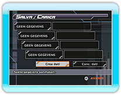
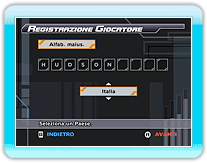
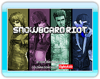

8 |
Operazioni preliminari |
 |
|
Prima di tutto saranno creati i dati giocatore (dati salvati), quindi immetti un nome giocatore. Quando crei i dati giocatore dovrai impostare la tua area di registrazione Classifica Wi-Fi. Scegli il Paese dove vivi tra le opzioni disponibili.
Premi
Per ulteriori informazioni su Wii Balance Board fare riferimento al libretto d'istruzioni specifico per Wii Balance Board.
Quando la Wii Balance Board è collegata, sarà eseguito un controllo di assenza difetti.
L'ottimizzazione sarà eseguita prima della selezione della modalità. Segui le istruzioni su schermo. * |
 |
 |
 |